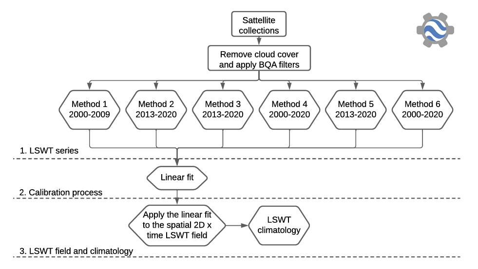

9 Temperature
9.1 Summary
Exploration of urban temperature variations using Landsat and MODIS satellite data.
9.1.1 Vector Data:
The process begins with loading a level 2 administrative area (Beijing) to extract temperature data.
9.1.2 Landsat Data:
Landsat data is processed to examine urban temperatures during the summer months. The temperature band (B10) in Landsat, which is in Kelvin, is adjusted to Celsius. The process includes filtering the data by date, cloud cover, and applying scale factors to the thermal bands. A mean temperature image is then created and visualized with a specific color palette.
9.1.3 MODIS Data:
The MODIS instrument, aboard both the Terra and Aqua satellites, provides more frequent global coverage. The practical explores using MODIS data for the same period and area as the Landsat data, highlighting the differences in image resolution and the number of images available. The MODIS data also undergoes scaling adjustments to convert temperature values from Kelvin to Celsius.
9.1.4 Temperature Visualization:
Both Landsat and MODIS processed data are visualized to display urban temperatures. The visualization parameters include a color palette that ranges from cool to warm temperatures.
9.1.5 Time Series Analysis:
Create a time series chart of temperature using MODIS data, which allows for the observation of temperature changes over time, albeit with a loss of spatial detail.
9.1.6 Spatial Unit Statistics:
Explore calculated average temperatures for smaller administrative units within Beijing using the reduceRegions function in GEE. This method enables the examination of temperature variations across different areas.
9.1.7 Export and Trend Analysis
Export the processed data for further analysis outside of GEE. Introduce a heat index to categorize areas based on their vulnerability to high temperatures.
9.2 Application
GEE plays a critical role in some studies by enabling the processing of large datasets without demanding local computing power. In Ermida’s research, the methodology is based on GEE’s cloud computing capabilities (Ermida, et al., 2020). By providing a code repository for computing Landsat LST within GEE, the methodology significantly reduces the barriers to accessing and utilizing high-resolution LST data for environmental analysis. In another research by pedreros, they utilize GEE to access to and preprocessing of Landsat 7 and 8 satellite imagery covering the study period, including cloud cover removal and quality assessment and implement six methods for LSWT retrieval within the GEE environment, which could be a critical challenge without such cloud service.

9.3 Reflection
In addition to the powerful analytical capabilities for large-scale data processing mentioned in the previous chapter on GEE, the two temperature research case studies demonstrated two additional advantages of GEE:
Integration of Multiple Data Sources: GEE integrates a vast array of remote sensing datasets from different satellites, including Landsat and MODIS, allowing researchers to select the data most suited to their research needs. This data is significant for analyzing changes in land surface temperature, monitoring environmental changes, and more.
Automated Data Processing Workflow: By implementing various data processing and temperature extraction algorithms on the GEE platform, researchers can automate complex data analysis processes, thus enhancing research efficiency. For example, GEE can be utilized for extracting land surface temperature (LST), monitoring lake surface water temperature (LSWT), and other tasks.
9.4 Reference
ERMIDA, S.L., SOARES, P., MANTAS, V., FRANK-M GÖTTSCHE and TRIGO, I.F., (2020.) ‘Google Earth Engine Open-Source Code for Land Surface Temperature Estimation from the Landsat Series’. Remote Sensing, 12(9), pp. 1471.
PEDREROS-GUARDA, M., ABARCA-DEL-RÍO, R., ESCALONA, K., GARCÍA, I. and PARRA, Ó., (2021.) ‘A Google Earth Engine Application to Retrieve Long-Term Surface Temperature for Small Lakes. Case: San Pedro Lagoons, Chile’. Remote Sensing, 13(22), pp. 4544.